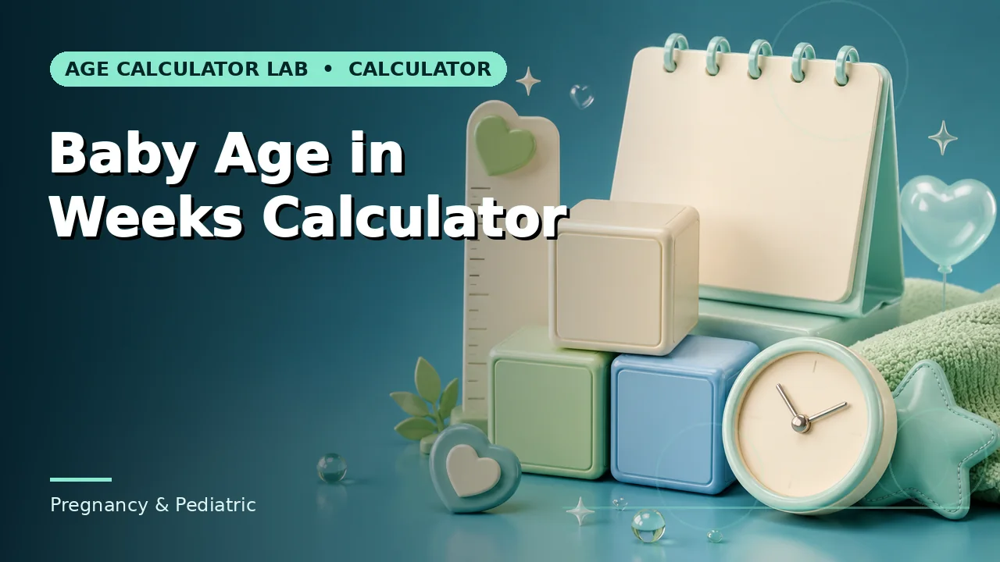
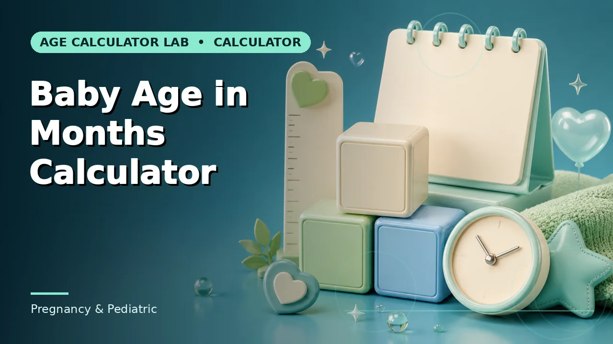

Quick answer
Count complete seven-day periods from the birth date. Weeks and months do not line up, so keep both available rather than converting between them.
Why weeks, and for how long
In the first few months, a calendar month covers an enormous amount of change. Weeks give finer resolution, and because a week is always exactly seven days, they are unambiguous in a way months never are — 8 weeks is always 56 days, whereas 2 months is 59 to 62.
Most families and services shift from weeks to months somewhere between three and six months, when the week count stops being intuitive. There is no rule about when; what matters is that whichever unit is written down is labelled, since "12" could mean weeks or months and the two are very different babies.
Use this guide with the right tool: Open the Baby Age in Weeks Calculator for a baby’s chronological age in completed weeks and days. If the question shifts, compare it with the Baby Age in Months Calculator or the Age in Weeks Calculator.
Weeks and months do not convert
Four weeks is 28 days. No calendar month is 28 days except February in a common year. So a baby reaches 8 weeks before reaching 2 calendar months, and the gap widens as the counts grow — by six months the difference is nearly a full week.
Because of this, treating "four weeks" and "one month" as equivalent introduces a drift that compounds. Calculate each from the birth date rather than converting one into the other, and if a form asks for months, give calendar months rather than a week count divided by four.
The remainder is part of the answer
Age in weeks is a division with a remainder: a baby is 12 weeks and 3 days, not simply 12 weeks. Dropping the remainder discards up to six days, which at this age is a meaningful proportion of the interval.
Health and development conversations often work at exactly this resolution, so keeping the days field makes a note more useful and more reproducible. It also makes it obvious which day of the week the baby's weekly anniversary falls on, which is useful for anything scheduled weekly.
Where prematurity fits
For a baby born preterm, a week count from the birth date is chronological age. Developmental discussions will usually use corrected age instead, which subtracts the weeks born early.
Keep both, labelled. A record that gives a week count without saying whether it is chronological or corrected is ambiguous by however many weeks early the baby arrived, and that ambiguity is exactly the information a reader needs.
Worked example
Numbers from a worked example are illustrative, not precedent. Run yours, keep the inputs beside the result, and confirm any rule that carries a consequence.
Common mistakes to avoid
- Treating four weeks as one month. Four weeks is 28 days; no calendar month is. Calculate each from the birth date instead of converting.
- Dropping the days remainder. Up to six days disappear. At this age that is a meaningful part of the interval.
- Writing a week count without labelling it. For a preterm baby, chronological and corrected week counts differ by however many weeks early they arrived.
Use the right calculator
These cover the calculations described above. Every page shows its method, so a result can be checked rather than taken on trust.


Frequently asked questions
When should I switch from weeks to months?
Usually somewhere between three and six months, when the week count stops being intuitive. There is no rule — just label whichever you use.
Does the birth week count as week one?
This calculator counts completed weeks, so the first seven days are week zero. If another source disagrees, check its convention.
Which unit do appointments use?
It varies by service and by the baby's age. Bring the birth date and both figures and it will not matter.